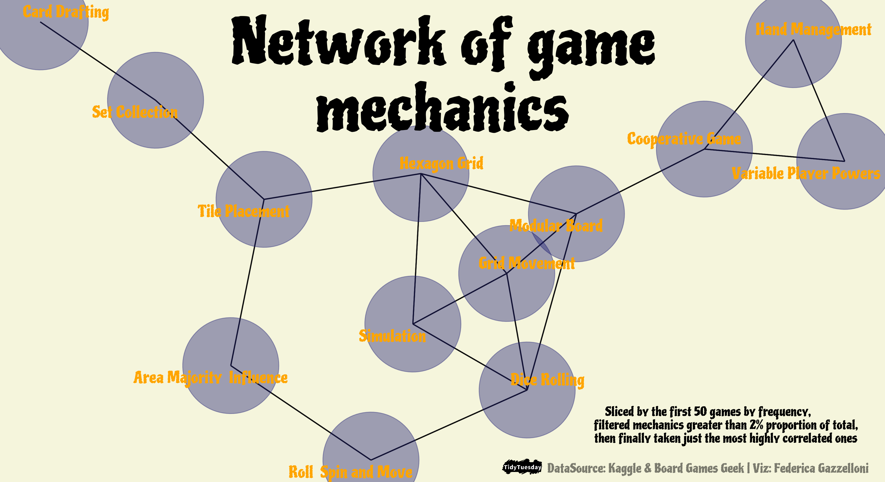

Network of game mechanics
By Federica Gazzelloni
January 24, 2022
Overview
I’ve chosen this graphic for my blog because it turned out to be very interesting. As you can see reading through the article, the shape of the network changes along with the change of the parameters.
The dataset I’ve used for making this network comes from #TidyTuesday 2022 week 4 Board games.
The picture below is the result of the network visualization.

The first step is to load the library needed for making the manupulations. I usually load {tidyverse} package because it contains a series of sub packages and functions that are all that is neede for thsi first part of the data wrangling. Also, it provides the pipe %>% operator, which is useful for linking different functions through subsetting the dataset.
library(tidyverse)
The data sets provided can be loaded from the source like this:
ratings <- readr::read_csv('https://raw.githubusercontent.com/rfordatascience/tidytuesday/master/data/2022/2022-01-25/ratings.csv')
details <- readr::read_csv('https://raw.githubusercontent.com/rfordatascience/tidytuesday/master/data/2022/2022-01-25/details.csv')
I’ve also added few line of code for backing the original datasets by saving them as .RDS files, a light file format to store information in.
saveRDS(ratings,"ratings.rds")
saveRDS(details,"details.rds")
And assigned them to new variables:
rat <- readRDS("ratings.rds")
det <- readRDS("details.rds")
Variables
Let's see the variable's names inside the sets.
names(rat)
[1] "num" "id" "name" "year"
[5] "rank" "average" "bayes_average" "users_rated"
[9] "url" "thumbnail"
names(det)
[1] "num" "id"
[3] "primary" "description"
[5] "yearpublished" "minplayers"
[7] "maxplayers" "playingtime"
[9] "minplaytime" "maxplaytime"
[11] "minage" "boardgamecategory"
[13] "boardgamemechanic" "boardgamefamily"
[15] "boardgameexpansion" "boardgameimplementation"
[17] "boardgamedesigner" "boardgameartist"
[19] "boardgamepublisher" "owned"
[21] "trading" "wanting"
[23] "wishing"
Based on the variables in the data sets, I’ve started googling for some information nad/or visualizations about Board games, to see if I could find any inspiration from past submissions, and in fact found this source of inspiration: https://www.thewayir.com/blog/boardgames/. Looking through the article found the code and the type of visualization I had in mind, so started replicating the code from the article. My surprise was that data updating and my manipulation slightly changed the output of the plot.
Let’s go a bit more in deep about that. I’ll go through the steps for replicatiing the network but then sligtly change the output to what you can see in the picture.
Among the required libraries found {widyr} package which was very new to me.
Encapsulates the pattern of untidying data into a wide matrix, performing some processing, then turning it back into a tidy form. This is useful for several operations such as co-occurrence counts, correlations, or clustering that are mathematically convenient.
And then the other packages such as {igraph}, {ggraph}, and {ggforce}, all packages for making networks of data, and for making extra features.
require(widyr)
require(igraph)
require(ggraph)
require(ggforce)
Data wrangling
What's the best manipulation for making a graph?
Here is the first part of the data-wrangling
board_games <- rat %>%
select(id,name) %>%
left_join(select(det,id,boardgamemechanic),by="id") %>%
rename(mechanic=boardgamemechanic) %>%
tidyr::separate_rows(mechanic, sep = ",") %>%
mutate(mechanic = str_remove_all(mechanic, "[[:punct:]]"),
mechanic = str_trim(mechanic),
mechanic = gsub("^and ","",mechanic)) %>%
filter(!is.na(mechanic))
kableExtra::kable(head(board_games))
| id | name | mechanic |
|---|---|---|
| 30549 | Pandemic | Action Points |
| 30549 | Pandemic | Cooperative Game |
| 30549 | Pandemic | Hand Management |
| 30549 | Pandemic | Point to Point Movement |
| 30549 | Pandemic | Set Collection |
| 30549 | Pandemic | Trading |
Here is the second part of the wrangling
mechanic <- board_games %>%
count(mechanic,sort=T) %>%
mutate(mechanic_pct=round(n/sum(n)*100,2))%>%
left_join(select(board_games,name,mechanic),by="mechanic") %>%
mutate(name=as.factor(name),mechanic=as.factor(mechanic)) %>%
distinct()
This part is for setting the fonts
library(extrafont)
library(showtext)
showtext::showtext_auto()
showtext::showtext_opts(dpi=320)
library(sysfonts)
#font_families_google()
font_add_google(name="Piedra",family="games")
family = "games"
Select the first 50 games
board_games50 <-board_games%>%
select(name,mechanic)%>%
count(name,sort=T) %>%
slice(1:50)
Then finally make the plot.
The interesting part is here: if we change the filtering level of the mechanic_pct and/or the widyr::pairwise_cor() from the {widyr} package we can see the graph changing along with it. More changes if the level of correlation changes to a lower value more than if set to a higher value.
df <- board_games50%>%
left_join(mechanic,by="name") %>%
filter(mechanic_pct > 1) %>%
pairwise_cor(mechanic, name, sort = T) %>%
filter(correlation > .1)
The function igraph::graph_from_data_frame() transform data frames into igraph graphs. In addition the funtion igraph::tkplot() can be useful for looking at the graph under different perspectives.
This is the final version of the plot:
plot <- df %>%
igraph::graph_from_data_frame() %>%
ggraph() +
geom_edge_link(linejoin = "round",
color="grey5",
edge_colour="red",
edge_width=0.5,
edge_linetype="solid") +
geom_node_point(color="midnightblue",size=40,alpha=0.4) +
geom_node_text(aes(label = name),
repel = T,
size=5,
nudge_y = 0,
color="orange",
family=family) +
theme_void() +
theme(text = element_text(family=family),
plot.background = element_rect(color="beige",fill="beige"))
Final touches with {cowplot} and ggsave()
Adding some features and save
library(cowplot)
final <-ggdraw()+
draw_plot(plot) +
draw_label("Network of game \nmechanics",x=0.5,y=0.85,size=55,fontfamily=family)+
draw_label("Sliced by the first 50 games by frequency,
filtered mechanics greater than 2% proportion of total,
then finally taken just the most highly correlated ones",
x=0.8,y=0.12,size=11,fontfamily=family) +
draw_label("DataSource: Kaggle & Board Games Geek | Viz: Federica Gazzelloni",
x=0.8,y=0.03,angle=0,size=11,alpha=0.5,fontfamily=family) +
draw_image("https://raw.githubusercontent.com/rfordatascience/tidytuesday/master/static/plot_logo.png",x=0.09,y=-0.47,scale=0.05)
ggsave("w4_board_games.png",
plot =final,
bg="white",
dpi = 320,
width = 11,
height = 6
)
Resources:
- Posted on:
- January 24, 2022
- Length:
- 4 minute read, 776 words
- See Also: